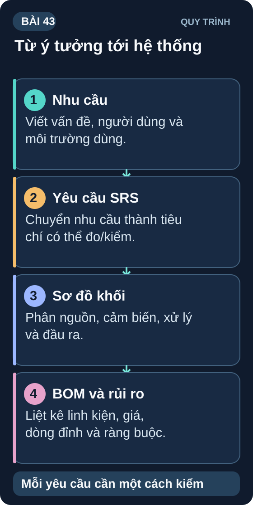
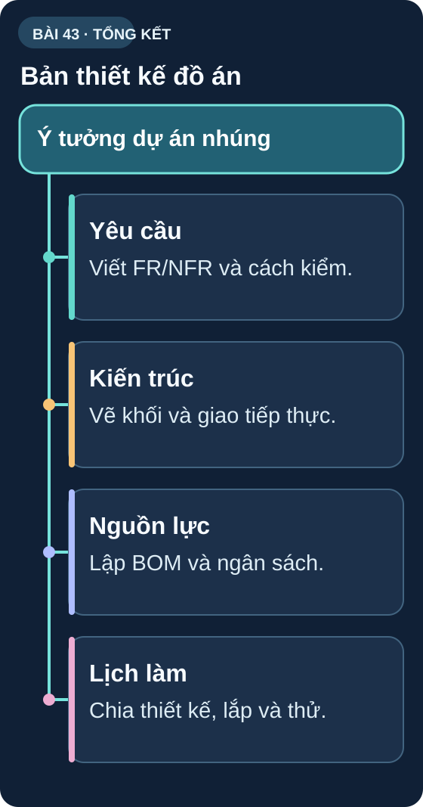

Đồ Án — Lên Ý Tưởng & Thiết Kế Hệ Thống
Quy trình kỹ thuật từ ý tưởng đến bản thiết kế — SRS, sơ đồ khối, chọn linh kiện và kế hoạch thực hiện trong 2 tuần.
- Áp dụng quy trình Systems Engineering vào dự án nhúng
- Viết SRS (Software/System Requirements Specification) cơ bản
- Vẽ Block Diagram — sơ đồ khối hệ thống rõ ràng
- Lập danh sách BOM (Bill of Materials) với giá ước tính
- Xác định risk và phương án dự phòng
- Lên timeline thực hiện 2 tuần (Tuần 7–8)
- 4 template đồ án gợi ý: Trạm thời tiết, Tưới cây tự động, Robot dò line, Máy đo ECG giả lập

1. Quy trình thiết kế hệ thống nhúng
Mô hình chữ V: đi từ yêu cầu xuống thiết kế và hiện thực; khi có module chạy được, kiểm thử đi ngược lên theo từng mức. Mỗi phép kiểm phải đối chiếu một quyết định thiết kế tương ứng:
| Thiết kế | Kiểm chứng tương ứng |
|---|---|
| Yêu cầu hệ thống | Kiểm thử hệ thống theo tiêu chí chấp nhận. |
| Kiến trúc và giao diện giữa các khối | Kiểm thử tích hợp, giao tiếp và nguồn giữa các module. |
| Thiết kế chi tiết từng module | Kiểm thử đơn vị và phép đo từng module. |
| Hiện thực | Build, nạp chương trình và kiểm các module đã lắp. |
Lịch gợi ý hai tuần: ngày 43–44 lập ý tưởng/SRS/sơ đồ khối/BOM; ngày 45–46 vẽ schematic và khung firmware; ngày 47–48 hoàn thiện và thử module; ngày 49 kiểm tích hợp; ngày 50–53 hoàn thiện PCB nếu phạm vi/tiến độ cho phép; ngày 54–55 lắp và kiểm toàn hệ thống; ngày 56 demo và báo cáo. Chế tạo PCB phụ thuộc thời gian đặt hàng thực tế, không coi là cam kết hoàn tất trong hai tuần.
2. SRS — Software Requirements Specification cơ bản
1. Mô tả hệ thống: [Tên dự án]. [1 câu mô tả ngắn gọn].
2. Yêu cầu chức năng (Functional Requirements):
FR1: Hệ thống phải [chức năng 1].
FR2: Hệ thống phải [chức năng 2].
...
3. Yêu cầu phi chức năng (Non-Functional):
NFR1: Thời gian phản hồi ≤ [N ms].
NFR2: Độ chính xác đo ≤ ±[X %].
NFR3: Thời gian pin ≥ [N giờ].
4. Ràng buộc: Ngân sách ≤ [N VNĐ]. Không dùng linh kiện [X]. Phải tương thích [Y].
5. Giao diện người dùng: [Mô tả UI — nút nhấn, màn hình, app]
3. Bốn đồ án gợi ý — Block Diagram mẫu
| # | Tên đồ án | Linh kiện chính | Độ phức tạp |
|---|---|---|---|
| A | Trạm Thời Tiết IoT Đo nhiệt/ẩm/áp suất, hiển thị OLED, upload Adafruit IO, cảnh báo Telegram | ESP32, BME280, SSD1306 OLED | ⭐⭐⭐ |
| B | Hệ Thống Tưới Cây Tự Động Đo độ ẩm đất, tưới theo lịch hoặc ngưỡng, log dữ liệu SD, điều khiển từ xa WiFi | ESP32, Soil moisture, relay, RTC DS3231, SD | ⭐⭐⭐⭐ |
| C | Robot Dò Line Tự Hành Cảm biến IR 5 kênh, điều khiển PID, tốc độ tự điều chỉnh theo độ cong | Arduino/ESP32, IR array, L298N, encoder | ⭐⭐⭐⭐ |
| D | Máy Đo Sức Khỏe Mini Đo nhịp tim MAX30102, SpO2, nhiệt độ cơ thể, hiển thị OLED + BLE gửi điện thoại | ESP32, MAX30102, MLX90614, OLED | ⭐⭐⭐⭐⭐ |
SRS mẫu — Trạm Thời Tiết IoT:
FR1: Đo nhiệt độ, độ ẩm, áp suất không khí mỗi 5 giây.
FR2: Hiển thị dữ liệu real-time trên OLED 128×64.
FR3: Upload dữ liệu lên Adafruit IO mỗi 60 giây.
FR4: Gửi cảnh báo Telegram khi nhiệt độ >35°C hoặc <10°C.
NFR1: Độ chính xác nhiệt độ ±0,5°C, độ ẩm ±2%RH.
NFR2: Thời gian pin ≥ 24 giờ với LiPo 2000mAh.
Ràng buộc: Ngân sách ≤ 500k VNĐ.
BOM ước tính: ESP32: 80k, BME280: 40k, OLED: 35k, TP4056+BMS: 15k, LiPo 2000mAh: 60k, Boost 5V: 15k, Housing/PCB: 50k. Tổng: ~295k VNĐ.
Sơ đồ tổng hợp Bài 43

Đọc nội dung sơ đồ bằng chữ
- Yêu cầu: Viết FR/NFR và cách kiểm. (mục SRS).
- Kiến trúc: Vẽ khối và giao tiếp thực. (mục Block Diagram mẫu).
- Nguồn lực: Lập BOM và ngân sách. (mục Block Diagram mẫu).
- Lịch làm: Chia thiết kế, lắp và thử. (mục Quy trình thiết kế hệ thống nhúng).